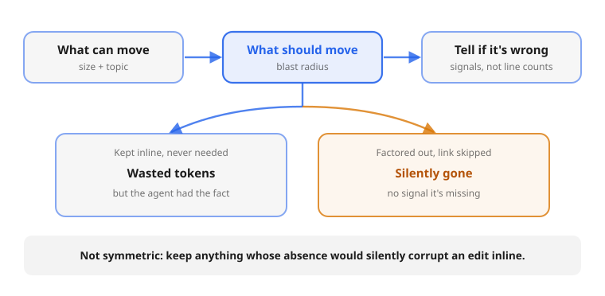

Structure a repository's documentation so AI coding agents navigate and update it efficiently.
A Claude Code skill that lays out a repo's docs so an agent pulls in exactly the context a task needs, without rereading the whole codebase or one sprawling instructions file. It's a way of organizing docs and keeping them current, not a tool that generates them: advice the agent applies at first setup and every time it touches the docs afterward.

Agent docs fail in two directions. One giant CLAUDE.md burns context
on every turn and still buries the rule that mattered; scattering everything into
linked files saves context only when the agent follows the link, so the critical
warning goes silently missing. And most of what gets written shouldn't be: docs earn
their keep by holding what code can't carry, the why behind a constraint,
the trap that cost an hour, the approach already tried and rejected.
One idea drives the rest. When you move a detail out of the always-loaded
CLAUDE.md into a linked file, you save context only if the agent actually
opens that file. If it skips the link, the detail is silently gone and nothing flags
it as missing. So the skill decides what to move by what an error would cost, not by
file size: a fact kept inline but never needed just wastes a few tokens, while a
critical rule moved out and missed can quietly break an edit. Anything whose absence
would corrupt an edit stays inline; only safely-skippable reference moves out.
See the full reasoning:
what can move, what should move, and how to tell when you got it wrong. It's measured,
not just argued: a dependency-free benchmark checks the effect across several models,
with results and caveats here.

Three tiers, split by audience and by how much loads at once:
README.mdCLAUDE.mdAGENTS.md so other tools
find it too.agent_docs/*.mdThe same load-on-demand idea, applied to a whole repo. The skill spells out the few rules that make it work, a deep dive on each, a writing style for the docs themselves, and copy-paste templates to start from. It scales from a single repo up to a monorepo or a family of related projects. Read the full model.
Download and unzip into a Claude Code skills directory:
curl -L -o structuring-agent-docs.zip \ https://wistrand.github.io/structuring-agent-docs/structuring-agent-docs.zip # the zip wraps everything in a structuring-agent-docs/ directory, # so this creates ~/.claude/skills/structuring-agent-docs/SKILL.md unzip structuring-agent-docs.zip -d ~/.claude/skills/
For development only. This symlinks the whole repo, exposing its docs and CI config
(docs/, .github/) to the agent, none of it executable:
git clone https://github.com/wistrand/structuring-agent-docs ln -s "$PWD/structuring-agent-docs" ~/.claude/skills/structuring-agent-docs
The agent loads it when you ask how to set up or reorganize CLAUDE.md,
AGENTS.md, or agent_docs/ for a repository.